All steps of a document lifecycle make up the document’s route. Any route can be automated by means of a business process. In a process, you can designate a person responsible for each stage, establish deadlines, and track the progress.
As a rule, a route is connected with a particular document type. Documents of the same type are created and stored in apps, and similar apps are grouped in workspaces.
For example, you may create the Payment Documents workspace for apps like Invoices, Service Provision Acts, Goods Delivery Notes, Payment Orders, Advance Reports, etc. Each app can have its own individual route set up.
Graphical elements for route configuration
You can create a document package from files stored in different apps and set up a unique route for it. For example, you can create a document package that includes a contract, a supplementary agreement, a work completion act, an invoice, etc., and then send the package for information or approval. Read more in the Create Document Package article.
Additionally, the following graphical elements are designed for processing documents during a business process: Generate from Template, Generate from File, Convert to PDF, Insert Watermark, Send Document/App Item, Approval, End Approval, Register Document.
Route example
Let’s say on the invoice creation form, an employee fills in details such as the amount, payment date, payment purpose, etc. After saving, the invoice is sent for approval to the CFO and then to the accounting department for payment.
Let’s look at how to set up such a workflow.
Step 1. Create a document
Go to the workspace and create a Document type app.
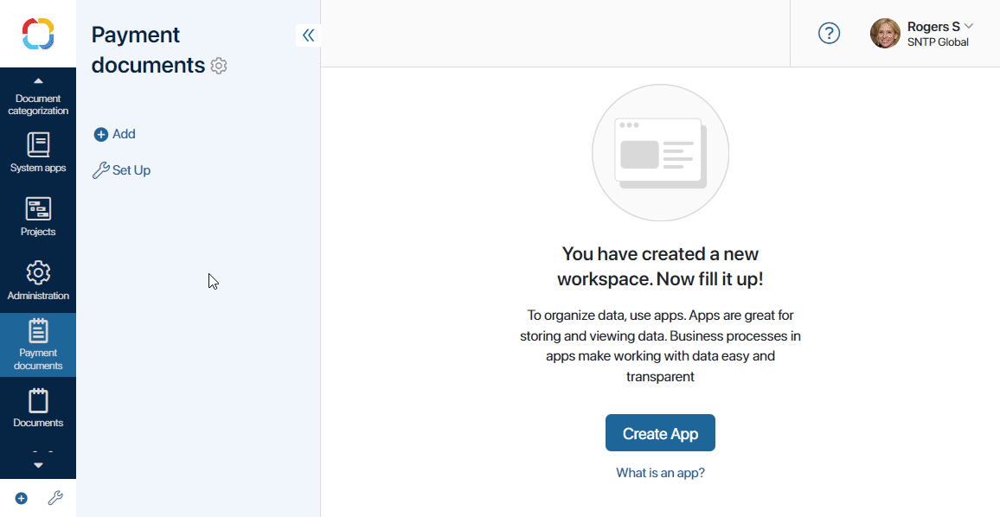
In the opened window, configure the app form: add fields that the employee will fill out when creating an invoice in the system. By default, a Files type field for uploading the invoice is displayed on the form. Add fields such as Amount of the Money type, Payment Purpose of the String type, Desired Payment Date of the Date/time type, etc. Indicate which fields are required. Read more in the Creating an app article.
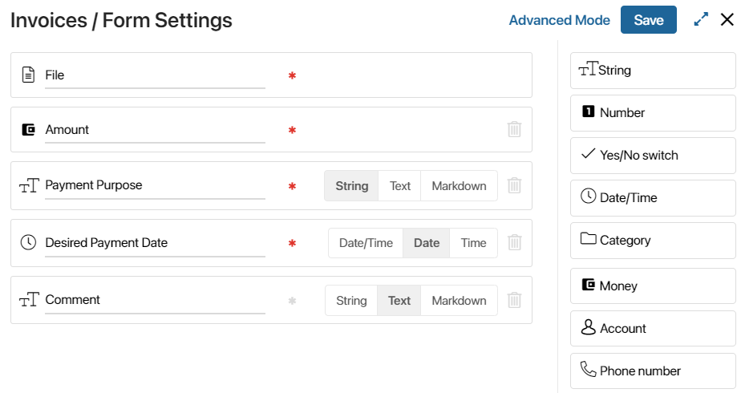
When you finish, click Save.
Step 2. Create a business process
After saving the form settings, you will see a window that allows you to immediately create a business process.
If you closed the window, you can proceed to creating a business process by clicking the gear icon next to the app’s name and selecting Business Processes. On the opened page, click the + Process button. Specify the name and code of the process.
When you click Create, the modeling page will open. Drag and drop elements from the right panel and connect them with transition arrows to create the route diagram.
The first business process created within the app will be automatically linked to it. This means that the process will be initiated for each created item immediately after saving. Read more in the Business process associated with an app article.
Step 3. Configure the route diagram
When setting up a workflow, you use graphical elements: participants are marked on the diagram using swimlanes, while invoice processing stages are described using activities and linked with each other with connectors. For the invoice approval route, you can use activities like Approval, End approval, Notification, and Task. The diagram will look like this:
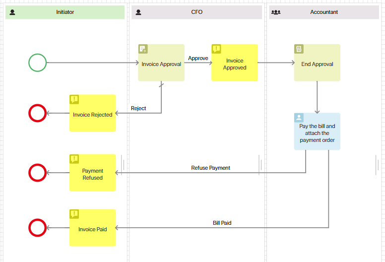
Let’s see how to configure each element of the route.
Define participants of the document route
Add a swimlane for each employee who plays a role in the process. The participants of the invoice approval route are the initiator, approver, and accountant. Therefore, you need to create three swimlanes.
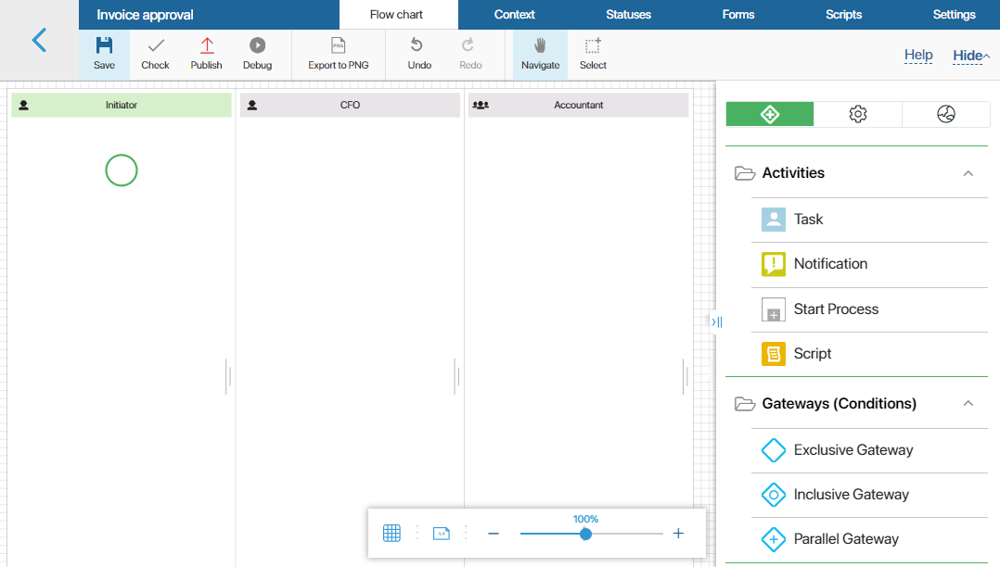
Since we don’t know beforehand who exactly will be sending invoices for approval, the initiator’s swimlane must represent any employee of the company. Swimlanes of this type are called dynamic and are colored green.
The CFO and accountant are specific roles, and each is assigned to a separate swimlane. Such swimlanes are called static. In the settings of a static swimlane, you can select the executor from the org chart.

Add an approval task
In the Approval activity, on the General tab, specify which document will be sent to the approver. In our example, it’s an invoice. It’s already added to the dropdown list since the business process is linked to the Invoices app. Also, select the Manually approval method.
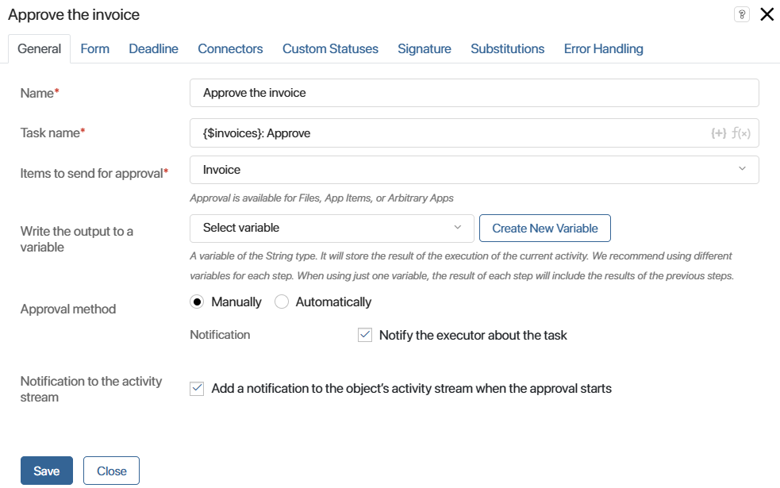
If you want to set an approval due date, go to the Deadline tab and specify how many days, hours, and minutes an employee has to complete this task.
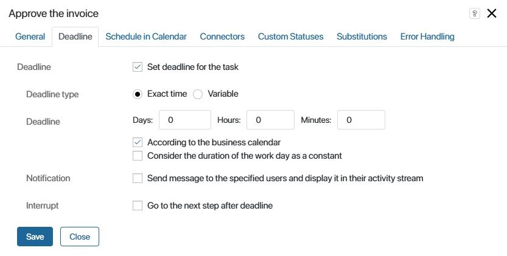
On the Connectors tab, mark one of the connectors as the default one.
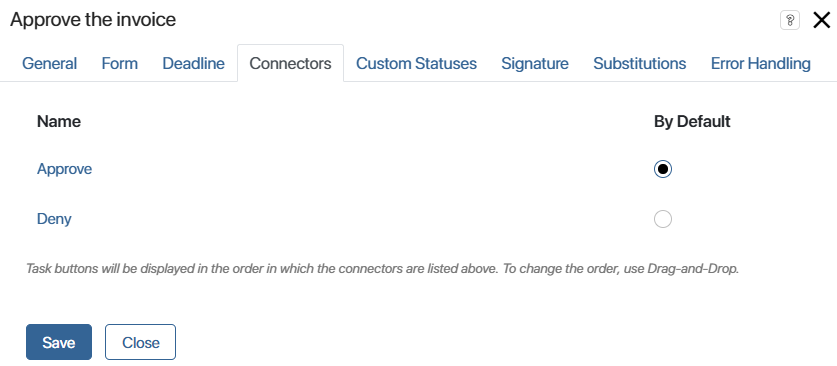
Specify approval conditions
For the Approve connector, you need to set conditions under which the document will be considered approved. Double-click on the arrow in the diagram to open the connector settings. Go to the Conditions tab and set the approval percentage to 100.
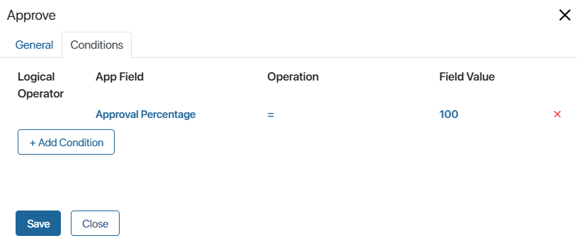
Notify employees about a document status
Notifications are placed on the diagram to inform employees about important events in the process.
In a notification’s settings, specify its name on the diagram and the text of the message that will be sent to users.
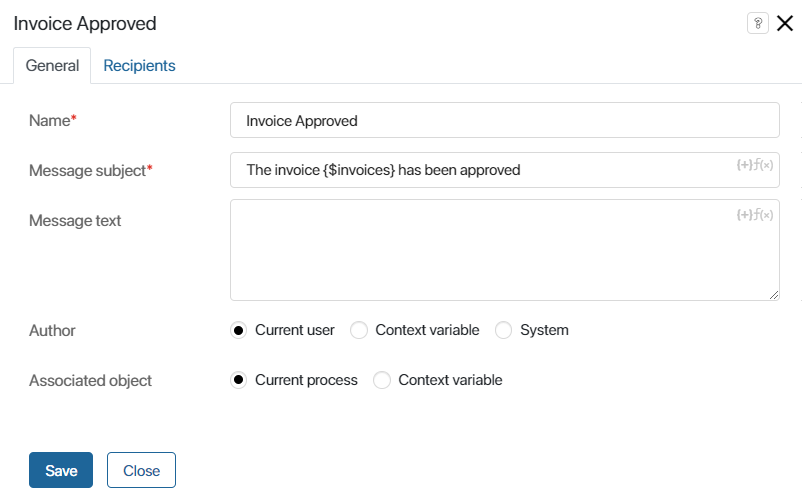
Then go to the Recipients tab and specify who will receive this message. By default, it is sent to the person in the swimlane that stores the Notification activity. If you need to notify any others, click the Add button and specify the employees.
In our example, the approval notification should be sent to the process initiator, but the activity is in the approver’s swimlane. Therefore, add the context variable Initiator to the recipient list.
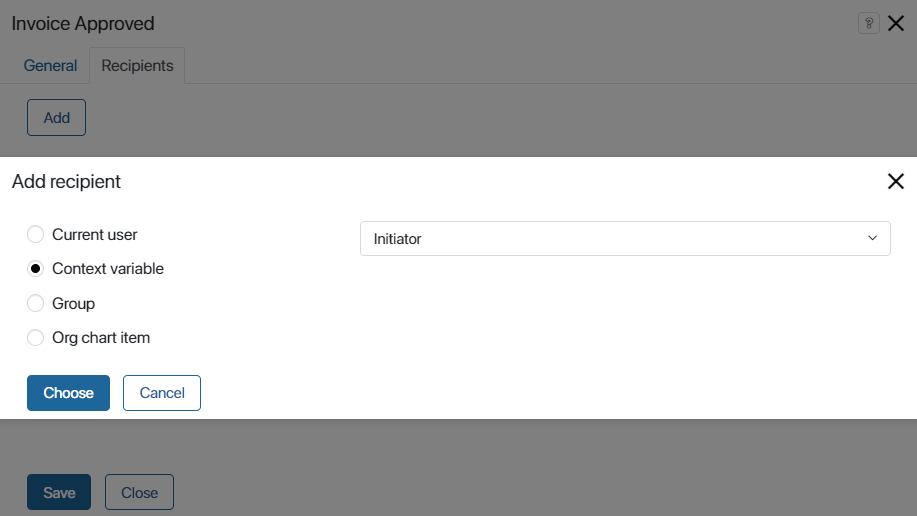
Generate a resolution on the document
The End Approval element is used as an auxiliary for the Approval element. It allows you to see the final decision on the document without having to wait for the process to finish.
Specify the document for which it is required to end the approval and set the Decision* option to Approved.
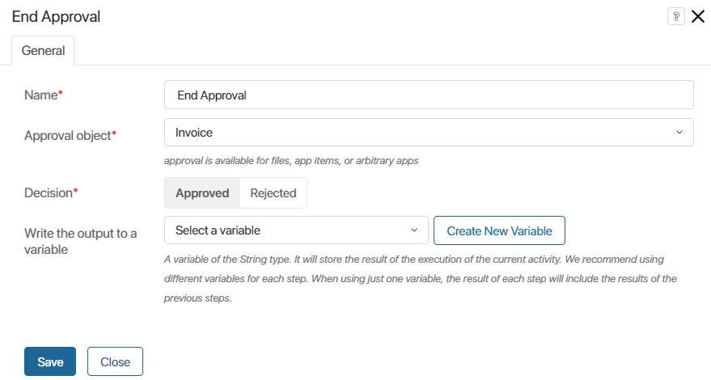
Add a task for paying the bill
A task is automatically assigned to the employee in whose swimlane it is placed. The task page should display all the information necessary for the employee to complete the work or make a decision.
To configure the task page for the Pay the bill and attach the payment order task, open the task activity and go to the Form tab. To display information about the invoice sent for approval, drag the Invoice field to the Name on form column and click on its name.
The field settings window will open. Go to the Properties tab and drag the necessary app fields to the Name on form column. These can be amount, purpose, date, etc. Make them read-only and click Save.
Also, add a Files type field for the payment order to the process context and drag it onto the task form.
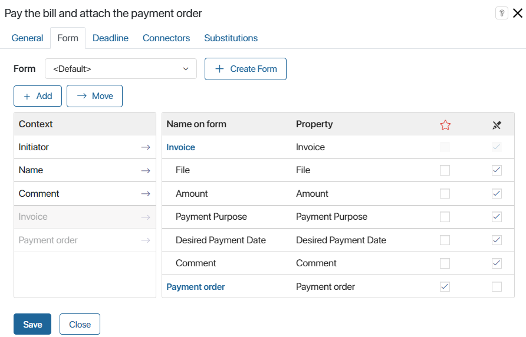
On the Deadline tab, you can set the due date for the task completion, similar to the Approval activity.
Configure buttons for task completion
Connectors determine which buttons the user will see on the task form. The connector label serves as the button name. In our example, two transitions go out of the Task activity, so the accountant will see the buttons Bill Paid and Refuse Payment.
Double-click on a connector in the diagram to change its settings. On the Transition Button tab, you can choose the button color, set up data validation, or add a confirmation box.
For example, for the Refused Payment button, disable the required fields check, so that the accountant can complete the task without attaching the payment order. Also, add a confirmation box.
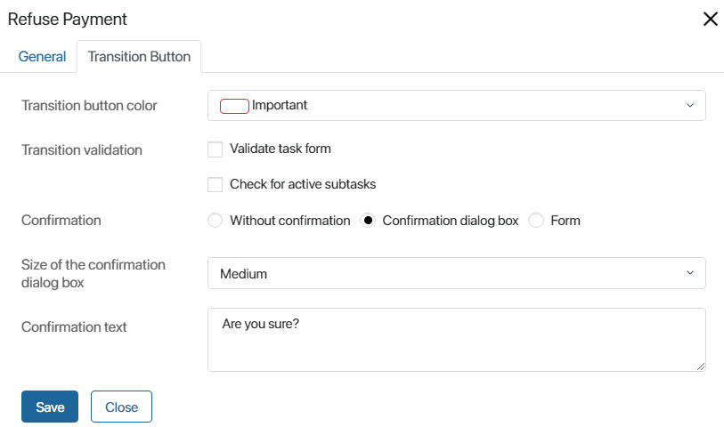
Step 4. Publish the configured process
Click the Publish button on the business process designer toolbar.
When publishing, the route diagram is checked. If there are errors in the process, a warning window will appear at the bottom of the page. Non‑critical errors don’t prevent the process from being published.
Step 5. Run the document route
To run the route, exit the business process designer, go to the Invoices app, and add a new invoice. To do this, click the + Invoice button in the top right corner of the app page. The creation form will open.
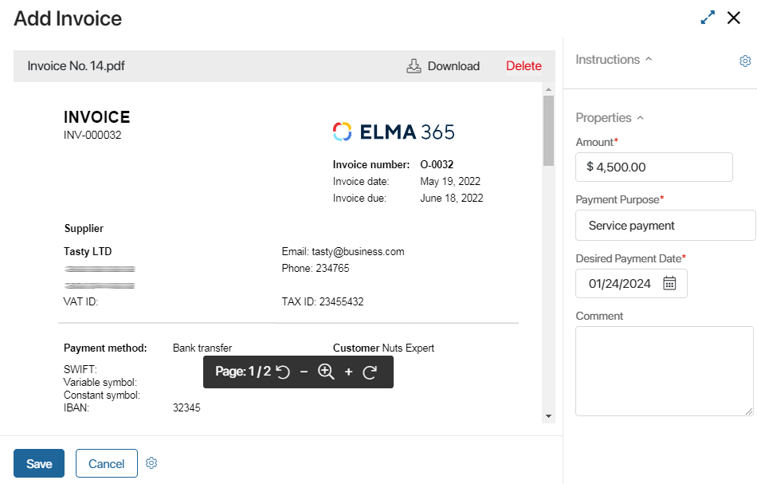
Fill in the data and click Save.
The invoice item will appear on the app page. Opening it, you can see the invoice data, the approval list, and tasks assigned to users.
The invoice approval route will be automatically started for the new invoice, and the CFO will be assigned the Approval task.
You can track how the document moves along the route using statuses. Read more about this in the Monitor documents by status article.